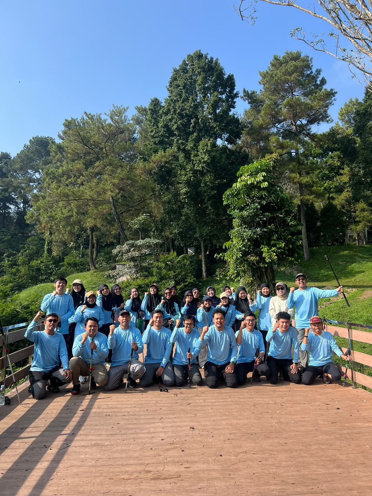

Mengenal lebih dekat Direktorat Penyelenggaraan Sumber Daya Alam Berkelanjutan, Kementerian Lingkungan Hidup / Badan Pengendalian Lingkungan Hidup.
Indonesia memiliki kekayaan sumber daya alam melimpah dengan tanggung jawab besar untuk memastikan keberlanjutan pemanfaatannya demi kesejahteraan generasi kini dan mendatang. Sejalan dengan Rencana Pembangunan Jangka Menengah Nasional (RPJMN) 2025-2029 untuk mewujudkan "Indonesia Emas 2045", kami mendukung transformasi ekonomi yang inklusif dan berkelanjutan.
Kementerian Lingkungan Hidup / Badan Pengendalian Lingkungan Hidup (KLH/BPLH) berkontribusi signifikan terhadap Prioritas Nasional 2 (Kemandirian bangsa melalui ekonomi hijau/biru dan ketahanan ekologi) dan Prioritas Nasional 8 (Harmonisasi lingkungan hidup dan budaya untuk masyarakat adil-makmur).
Dalam struktur organisasi KLH/BPLH, Direktorat Penyelenggaraan Sumber Daya Alam Berkelanjutan (PSDAB) di bawah Deputi Bidang Tata Lingkungan dan Sumber Daya Alam Berkelanjutan memiliki peran krusial sebagai garda terdepan dalam memastikan pemanfaatan sumber daya alam tidak hanya berorientasi pada keuntungan ekonomi jangka pendek, tetapi juga mempertimbangkan aspek ekologi dan sosial jangka panjang.

Berdasarkan Peraturan Menteri Lingkungan Hidup/Kepala Badan Pengendalian Lingkungan Hidup Nomor 1 Tahun 2024, Direktorat Penyelenggaraan Sumber Daya Alam Berkelanjutan (PSDAB) mempunyai kedudukan dan peran strategis dalam mendukung tercapainya tujuan dan sasaran pembangunan planologi kehutanan dan tata lingkungan.
Melaksanakan perumusan dan pelaksanaan kebijakan teknis di bidang penyelenggaraan terkait perencanaan perlindungan dan pengelolaan lingkungan hidup dan sumber daya alam berkelanjutan.
Penyiapan perumusan kebijakan teknis di bidang inventarisasi lingkungan hidup dan sumber daya alam, penetapan wilayah ekoregion, serta rencana perlindungan dan pengelolaan lingkungan hidup (RPPLH).
Pelaksanaan kebijakan teknis di bidang inventarisasi LH dan SDA, penetapan wilayah ekoregion, serta RPPLH.
Penyusunan dan penetapan standar instrumen di bidang inventarisasi LH dan SDA, penetapan wilayah ekoregion, serta RPPLH.
Penyiapan koordinasi dan sinkronisasi pelaksanaan kebijakan teknis di bidang inventarisasi LH dan SDA, penetapan wilayah ekoregion, serta RPPLH.
Penyiapan penyusunan norma, standar, prosedur, dan kriteria di bidang inventarisasi LH dan SDA, penetapan wilayah ekoregion, serta RPPLH.
Pemberian bimbingan teknis dan supervisi di bidang inventarisasi LH dan SDA, penetapan wilayah ekoregion, serta RPPLH.
Pelaksanaan evaluasi dan pelaporan di bidang inventarisasi LH dan SDA, penetapan wilayah ekoregion, serta RPPLH.
Pelaksanaan urusan tata usaha direktorat.
Berdasarkan Peraturan Menteri Lingkungan Hidup/Badan Pengendalian Lingkungan Hidup Republik Indonesia Nomor 9 Tahun 2025 tentang Perubahan atas Peraturan Menteri Lingkungan Hidup/Kepala Badan Pengendalian Lingkungan Hidup Nomor 1 Tahun 2024 tentang Organisasi dan Tata Kerja KLH/BPLH, Direktorat PSDAB terdiri dari Direktur, Jabatan Fungsional, dan Jabatan Pelaksana.
Berdasarkan dengan Keputusan Direktur Penyelenggaraan Sumber Daya Alam Berkelanjutan Nomor SK. 05 Tahun 2025 tentang Perubahan Kedua Atas Revisi Kelompok Kerja Lingkup Direktorat Penyelenggaraan Sumber Daya Alam Berkelanjutan Tahun 2025, Direktorat PSDAB membentuk Kelompok Kerja Lingkup Direktorat PSDAB dengan susunan yaitu Kelompok Kerja Sistem Informasi, Kelompok Kerja RPPLH, dan Kelompok Kerja Inventarisasi Lingkungan Hidup.
Jika Anda memiliki pertanyaan seputar layanan RPPLH, data spasial, atau informasi lainnya, silakan hubungi kami melalui saluran berikut.
Menara Plaza Kuningan
Jl. H.R. Rasuna Said Kav. C11-14 Kuningan
Jakarta Selatan
6282211210700